In this set of analyses, I focus on the reaction times of starting game 2 (i.e., start RTs) and those of making a choice in game 2 (i.e., choice RTs). Here I use the exploratory data set with 127 participants.
Load libraries and data
Code
# load librarieslibrary(MASS)library(Rmisc)library(afex)library(tidyverse)library(patchwork)library(extraDistr)library(loo)library(bridgesampling)library(brms)library(cmdstanr)library(bayesplot)library(bayestestR)library(tidybayes)library(sjPlot)# parallelize the chains using all the coresoptions(mc.cores = parallel::detectCores())# set the theme for all ggplot2 figurestheme_set(theme_classic() +theme(legend.position ="top",legend.direction ="horizontal"))# create a folder for saving brms fitsif(!dir.exists("brms-fits")){dir.create("brms-fits")}# load the cleaned experimental datadf_exp <-read_csv("../../../data/processed/df_exp_exp3_complete.csv")
Start RTs
Data preparation
Next I examine how quickly participants started game 2 after a win vs. after a loss, and also as a function of whether there was a delay or not.
Code
# trial number before any exclusionn_before <-nrow(df_exp)# exclude trials in which the start RTs were above 5000 millisecondsdf_after <- df_exp %>%filter(game2_startRT <=5000)# trial number after exclusion, and the proportion of excluded trialsn_after <-nrow(df_after)exclude_prop <-round((n_before - n_after)/n_before *100, 2)# check the number of remaining trials in each cell for each participanttrials_count <- df_after %>%count(subject_ID, game1_outcome, delay)
Trials in which the start RT of game 2 was above 5000 milliseconds were excluded (1.28% of all trials). For the remaining participants, each cell in the 2 (game 1 outcome, win vs. loss) by 2 (delay, yes vs. no) contains at least 13 trials, which seems reasonable.
Mean start RTs
For each participant, I then compute the mean start RT (for game 2) after a win or a loss in game 1, depending on whether there was a delay or not. Figure 1 shows the mean start RTs as a function of the previous outcome and the delay condition.
Code
# compute the mean start RT in each cell for each participantdf_startRTs <- df_after %>%group_by(subject_ID, game1_outcome, delay) %>%summarize(startRT =mean(game2_startRT))# plot the resultsmean_startRT_plot <- df_startRTs %>%summarySEwithin(measurevar ="startRT",withinvars =c("game1_outcome", "delay"),idvar ="subject_ID") %>%ggplot(aes(game1_outcome, startRT, color = delay)) +geom_point(position =position_dodge(width =0.5)) +geom_line(aes(group = delay), linetype ="dashed", alpha =0.5,position =position_dodge(width =0.5)) +geom_errorbar(aes(ymin = startRT - ci, ymax = startRT +ci),position =position_dodge(width =0.5), width =0.3) +labs(x ="Previous outcome", y ="Mean Start RT (milliseconds)",color ="Pause")mean_startRT_plot
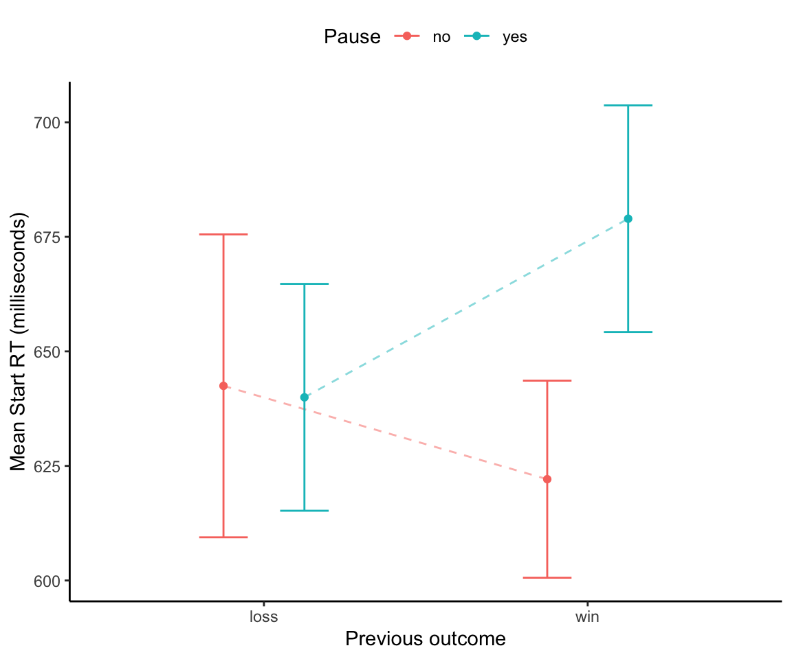
Figure 1: Mean start RTs for game 2 as a function of game 1 outcome and delay. Error bars stand for 95% within-subject confidence intervals.
Median start RTs
Here I repeat the analysis above, this time using the median RT in each cell instead of the mean.
Code
# compute the mean start RT in each cell for each participantdf_startRTs <- df_after %>%group_by(subject_ID, game1_outcome, delay) %>%summarize(startRT =median(game2_startRT))# plot the resultsmedian_startRT_plot <- df_startRTs %>%summarySEwithin(measurevar ="startRT",withinvars =c("game1_outcome", "delay"),idvar ="subject_ID") %>%ggplot(aes(game1_outcome, startRT, color = delay)) +geom_point(position =position_dodge(width =0.5)) +geom_line(aes(group = delay), linetype ="dashed", alpha =0.5,position =position_dodge(width =0.5)) +geom_errorbar(aes(ymin = startRT - ci, ymax = startRT +ci),position =position_dodge(width =0.5), width =0.3) +labs(x ="Previous outcome", y ="Median Start RT (milliseconds)",color ="Pause")median_startRT_plot
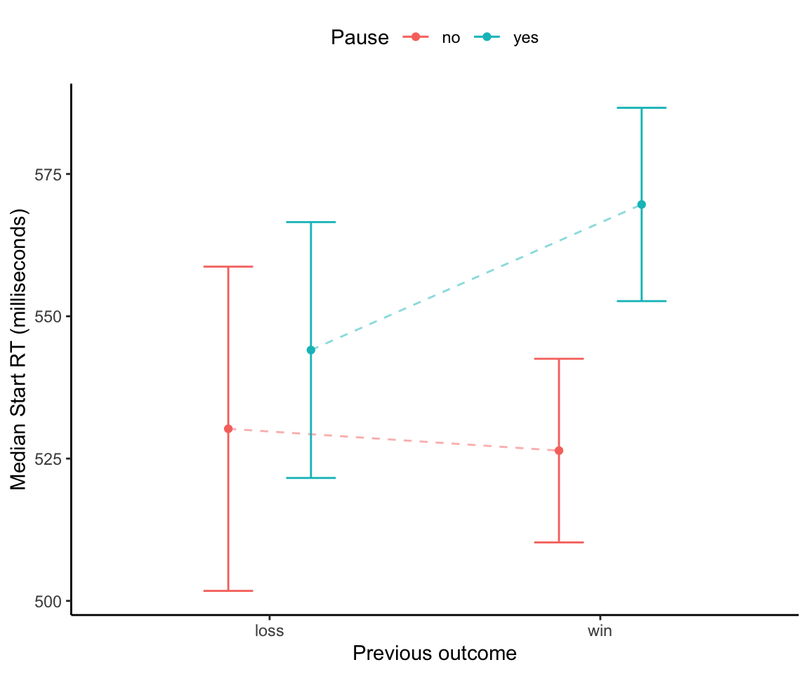
Figure 2: Median start RTs for game 2 as a function of game 1 outcome and delay. Error bars stand for 95% within-subject confidence intervals.
Multilevel models
Fit model
Fit the data with a hierarchical regression.
Code
# since startRT is positively skewed,# take the natural logarithm of the startRT as the dependent variable# we add 1 to all observations because in previous experiments,# start RTs sometimes can be 0, posing a problem for log-transformation.df_startRT <- df_after %>%mutate(log_startRT =log(game2_startRT +1))# fit a brms model, with student's t as the likelihood functionfit_startRT <-brm( log_startRT|trunc(ub =log(5001)) ~ game1_outcome_num * delay_num + (game1_outcome_num * delay_num|subject_ID),family =student(),prior =c(prior(normal(6.5, 1.5), class = Intercept),prior(normal(0, 1), class = b),prior(normal(0, 1), class = sd),prior(normal(0, 1), class = sigma),prior(gamma(2, 0.1), class = nu),prior(lkj(2), class = cor) ),data = df_startRT,cores =4,iter =7000,warmup =2000,seed =1234,refresh =10,file ="brms-fits/fit_startRT",backend ="cmdstanr" )
Results
Code
# check model diagnostics# plot(fit_startRT)# the trace plots look okay# loo(fit_startRT)# All Pareto k estimates are good (k < 0.5).# posterior predictive checkyrep <-posterior_predict(fit_startRT)# turn the start RT back to the original scaleyrep <-exp(yrep) -1ppc_dens_overlay(df_startRT$game2_startRT, yrep[1:50, ])remove(yrep)
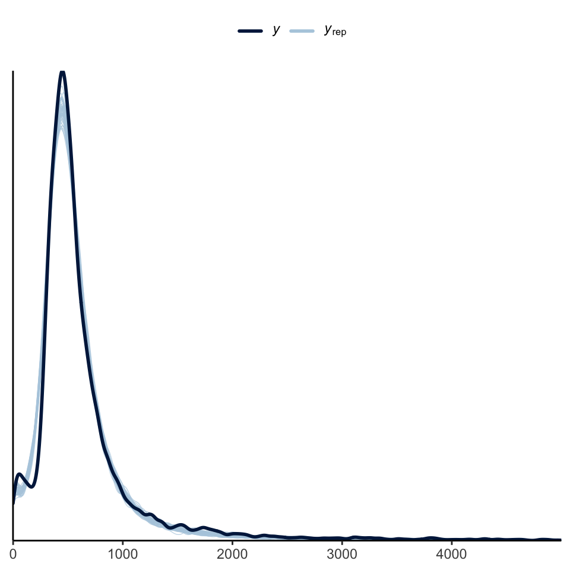
Figure 3: Posterior predictive check for start RT.
Code
# have a look at the summary of posterior distributionstab_model(fit_startRT, digits =2)
Dependent variable
Predictors
Estimates
CI (95%)
Intercept
6.24
6.19 – 6.28
game1_outcome_num
-0.03
-0.05 – -0.02
delay_num
0.07
0.03 – 0.10
game1_outcome_num:delay_num
-0.03
-0.06 – 0.00
Random Effects
σ2
0.24
τ00subject_ID
0.07
τ11subject_ID.game1_outcome_num
0.00
τ11subject_ID.delay_num
0.04
τ11subject_ID.game1_outcome_num:delay_num
0.01
ρ01
ρ01
ICC
0.25
N subject_ID
127
Observations
10023
Marginal R2 / Conditional R2
0.003 / 0.137
Plots
Code
# load some custom functions to plot RTs# all functions require the posterior draws from brms models as inputsource("function/RT_plot_functions.R")# select parameters of interestvar_selected <-get_variables(fit_startRT)[1:4]draws <- fit_startRT %>%as_draws_df(variable = var_selected) # compute extra parameters for all simple and main effectsdraws <-compute_RTs(draws)# plot RTs in each of the 2 by 2 cellsstartRT_plot <-plot_RTs(draws)# some minor modificationstartRT_plot <- startRT_plot +labs(y ="Start RT (milliseconds)")# plot all the effects startRT_effs_plot <-plot_RT_effs(draws)# some minor modificationstartRT_effs_plot <- startRT_effs_plot +labs(x ="Estimated difference in start RT (milliseconds)")# save the figuresggsave("../5-plots/startRT_Exp3_prereg.png", startRT_plot, width =2.5, height =5)ggsave("../5-plots/startRT_effs_Exp3_prereg.png", startRT_effs_plot, width =8, height =5)
Code
startRT_plot
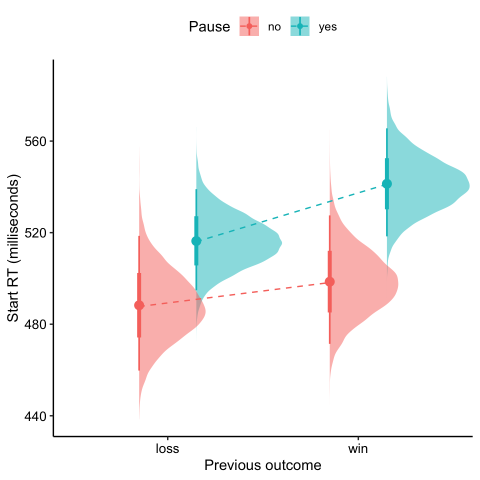
Figure 4: Estimated start RT as a function of previous outcome and pause condition
Code
startRT_effs_plot
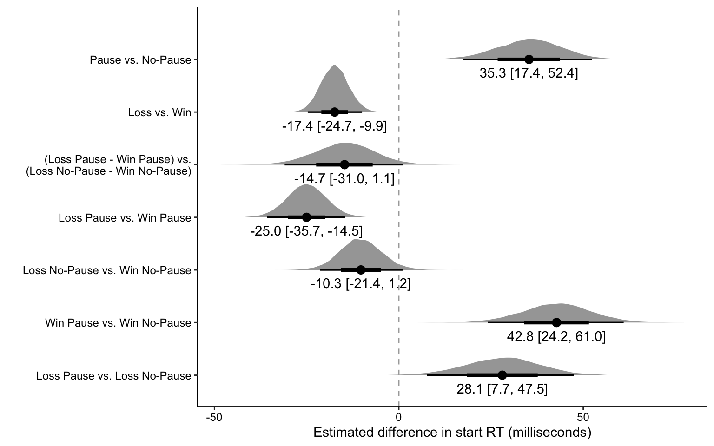
Figure 5: Esimates of main and simple effects on start RT.
Code
# Another plot, that includes the individual data points# this plot may be a bit difficult to read the inclusion of individual data points# makes the range of RT relatively large. Keep it here for now.# compute the mean of log start RT in each cell for each participantstartRT_obs <- df_startRT %>%group_by(subject_ID, game1_outcome, delay) %>%summarize(obs =mean(log_startRT)) # get the predicted log start RT from the modelint_conds <-list(game1_outcome_num =c(-0.5, 0.5),delay_num =c(-0.5, 0.5))startRT_pred <-conditional_effects( fit_startRT, "game1_outcome_num:delay_num",int_conditions = int_conds)# turn the predictions into a tibblestartRT_pred <-as_tibble( startRT_pred$`game1_outcome_num:delay_num` ) %>%mutate(delay =ifelse(delay_num ==0.5, "yes", "no"),game1_outcome =ifelse(game1_outcome_num ==0.5, "loss", "win") )startRT_pred_original <- startRT_pred %>%mutate(estimate__ =exp(estimate__) -1,lower__ =exp(lower__) -1,upper__ =exp(upper__) -1 )# make a plotstartRT_ind_plot <- startRT_obs %>%ggplot(aes(game1_outcome, obs, color = delay)) +geom_point(position =position_jitterdodge(jitter.width =0.2,jitter.height =0,dodge.width =0.5), alpha =0.1) +geom_point(data = startRT_pred, aes(game1_outcome, estimate__,color = delay),position =position_dodge(width =0.5)) +geom_errorbar(data = startRT_pred,aes(x = game1_outcome,y = estimate__,ymin = lower__,ymax = upper__),position =position_dodge(width =0.5),width =0.2) +geom_line(data = startRT_pred,aes(x = game1_outcome,y = estimate__,group = delay),position =position_dodge(width =0.5),linetype ="dashed",alpha =0.5) +labs(x ="Previous outcome",y ="Logarithm of startRT [log(RT + 1)]",color ="Pause")startRT_ind_plot
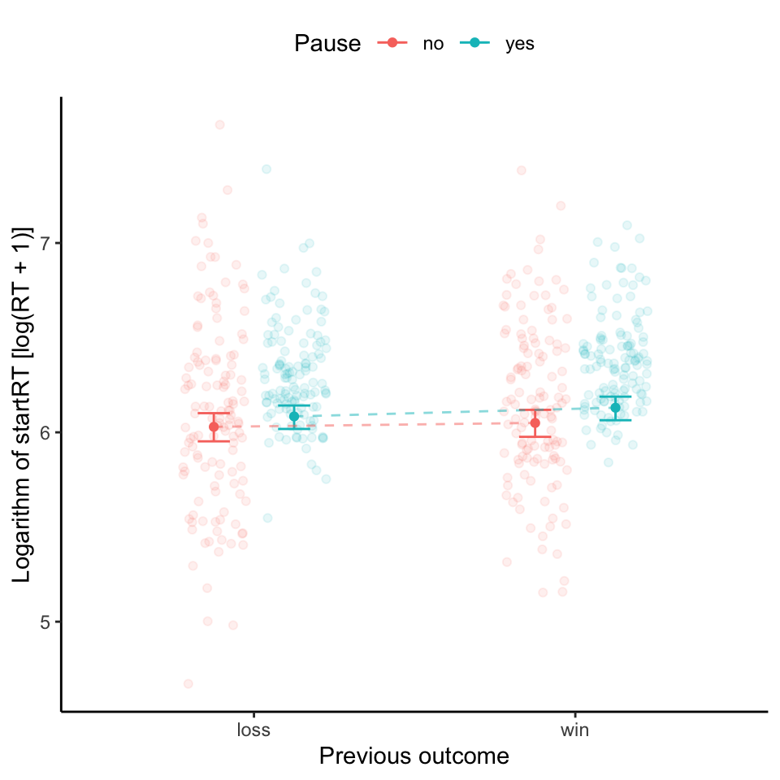
Figure 6: Estimated start RT as a function of previous outcome and pause condition, with individual data points.
Choice RTs
Data preparation
Next I examine whether the increased sensitivity towards the EV ratio after a delay may be explained by participants making decisions more slowly in the delay condition.
Code
# plot a distribution of all game 2 choice RTsggplot(df_exp, aes(game2_respRT)) +geom_histogram(bins =40) +geom_vline(xintercept =5000, linetype ="dashed") +labs(x ="Game 2 choice reaction time (milliseconds)")
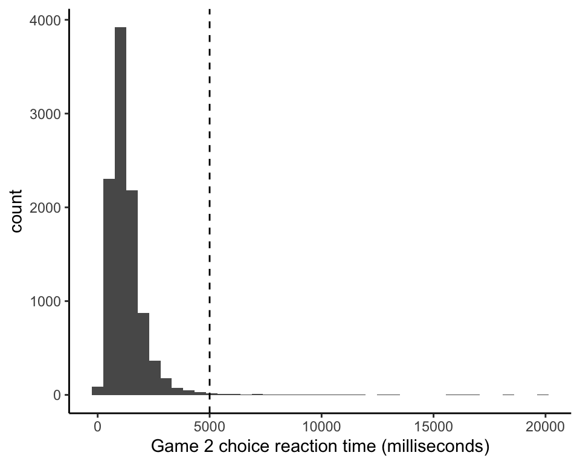
Figure 7: Histogram of all game 2 choice reaction times.
To reduce the influence of a few long reaction times, I exclude the trials where the choice RT was above 5000 milliseconds.
Code
# number of trials before exclusionn_before <-nrow(df_exp)# exclude trials with choice RTs above 5000 msdf_choiceRT <- df_exp %>%filter(game2_respRT <=5000)# number of trials after exclusionn_after <-nrow(df_choiceRT)# proportion of excluded trialsprop_exclude <-round((n_before - n_after)/n_before *100, 2)
Figure 9: Median choice RTs for game 2 as a function of game 1 outcome and delay. Error bars stand for 95% within-subject confidence intervals.
Multilevel models
Fit model
I use log-transformed choice RT as the dependent variable (truncated with a upper bound of log(5001), as above). Both game 1 outcome, whether there was a pause or not and their interaction are included as predictors.
Code
# log-transform the choice RTdf_choiceRT <- df_choiceRT %>%mutate(log_choiceRT =log(game2_respRT +1))# fit a brms modelfit_choiceRT <-brm( log_choiceRT|trunc(ub =log(5001)) ~ game1_outcome_num * delay_num + (game1_outcome_num * delay_num|subject_ID),family =student(),prior =c(prior(normal(6.5, 1), class = Intercept),prior(normal(0, 1), class = b),prior(normal(0, 1), class = sd),prior(normal(0, 1), class = sigma),prior(gamma(2, 0.1), class = nu),prior(lkj(2), class = cor) ),data = df_choiceRT,cores =4,iter =7000,warmup =2000,seed =1234,refresh =10,file ="brms-fits/fit_choiceRT",backend ="cmdstanr",refresh =10 )
Results
Code
# check model diagnostics# plot(fit_choiceRT)# the traceplots look okay# loo(fit_choiceRT)# All Pareto k estimates are good (k < 0.5).# posterior predictive checkyrep <-posterior_predict(fit_choiceRT)# turn the choice RT back to the original scaleyrep <-exp(yrep) -1ppc_dens_overlay(df_choiceRT$game2_respRT, yrep[1:50, ])remove(yrep)
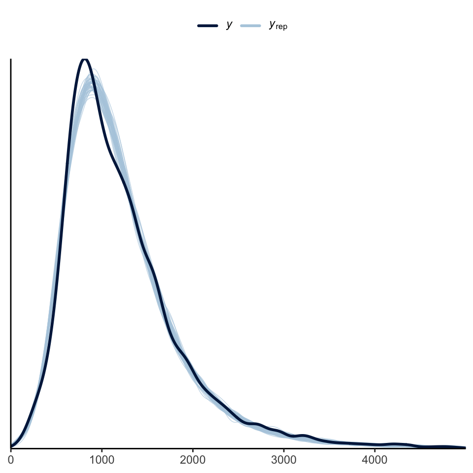
Figure 10: Posterior predictive check for choice RT.
Code
tab_model(fit_choiceRT, digits =4)
Dependent variable
Predictors
Estimates
CI (95%)
Intercept
6.9906
6.9389 – 7.0472
game1_outcome_num
-0.0367
-0.0531 – -0.0208
delay_num
0.0169
0.0016 – 0.0321
game1_outcome_num:delay_num
0.0045
-0.0252 – 0.0344
Random Effects
σ2
0.32
τ00subject_ID
0.09
τ11subject_ID.game1_outcome_num
0.00
τ11subject_ID.delay_num
0.00
τ11subject_ID.game1_outcome_num:delay_num
0.00
ρ01
ρ01
ICC
0.23
N subject_ID
127
Observations
10069
Marginal R2 / Conditional R2
0.002 / 0.329
Plots
Code
# load some custom functions to plot RTs# all functions require the posterior draws from brms models as inputsource("function/RT_plot_functions.R")# select parameters of interestvar_selected <-get_variables(fit_startRT)[1:4]draws <- fit_choiceRT %>%as_draws_df(variable = var_selected) # compute extra parameters for all simple and main effectsdraws <-compute_RTs(draws)# plot RTs in each of the 2 by 2 cellschoiceRT_plot <-plot_RTs(draws)# some minor modificationchoiceRT_plot <- choiceRT_plot +labs(y ="Choice RT (milliseconds)")# plot all the effects choiceRT_effs_plot <-plot_RT_effs(draws)# some minor modificationchoiceRT_effs_plot <- choiceRT_effs_plot +labs(x ="Estimated difference in choice RT (milliseconds)")# save the figuresggsave("../5-plots/choiceRT_Exp3_prereg.png", choiceRT_plot, width =2.5, height =5)ggsave("../5-plots/choiceRT_effs_Exp3_prereg.png", choiceRT_effs_plot, width =8, height =5)
Code
choiceRT_plot
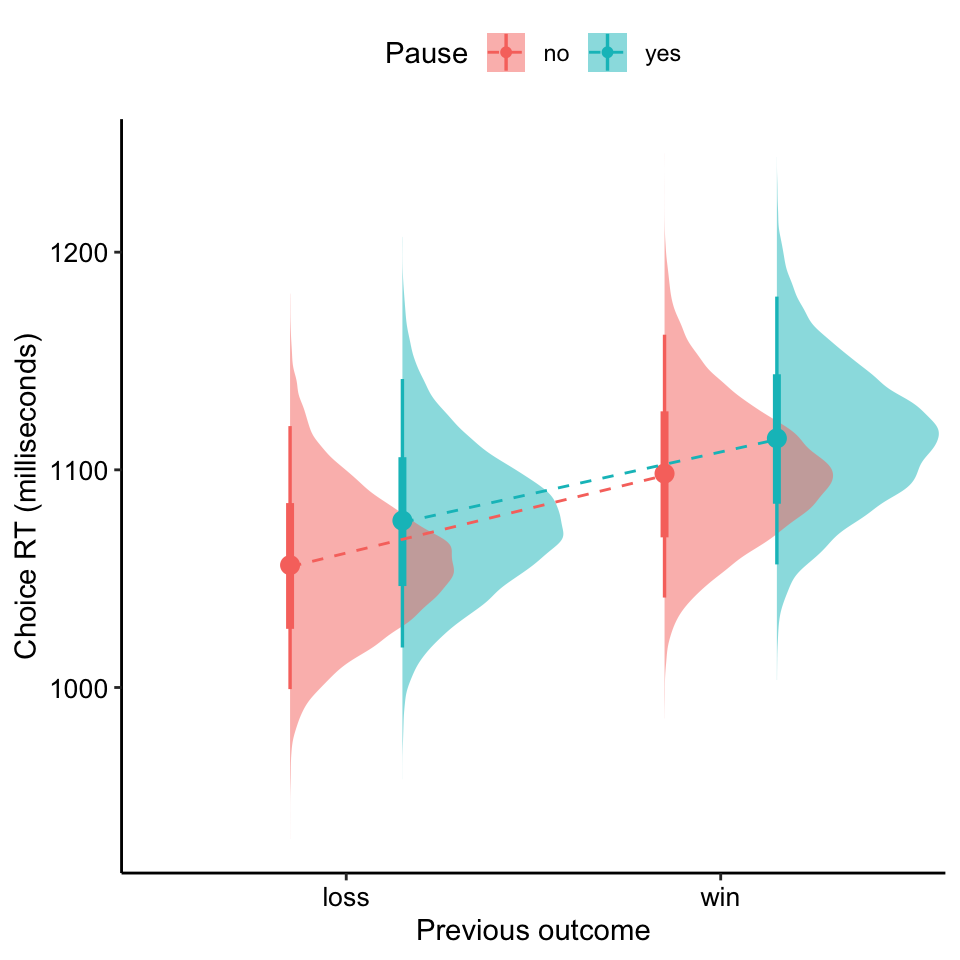
Figure 11: Estimated choice RT as a function of previous outcome and pause condition
Code
choiceRT_effs_plot
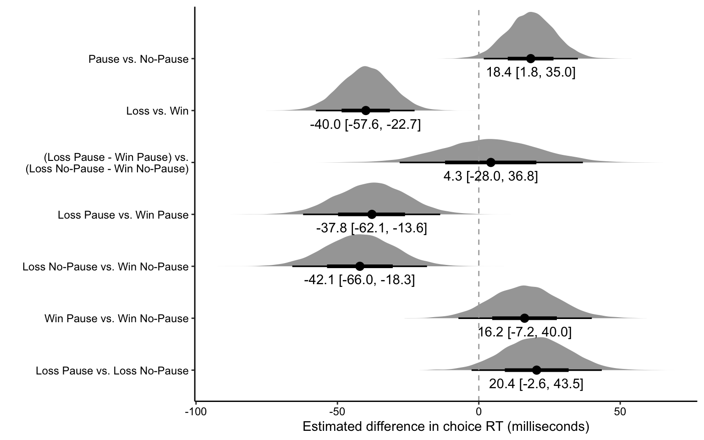
Figure 12: Esimates of main and simple effects on choice RT.
Code
# compute the mean of log choice RT in each cell for each participantchoiceRT_obs <- df_choiceRT %>%group_by(subject_ID, game1_outcome, delay) %>%summarize(obs =mean(log_choiceRT)) # get the predicted log choice RT from the modelint_conds <-list(game1_outcome_num =c(-0.5, 0.5),delay_num =c(-0.5, 0.5))choiceRT_pred <-conditional_effects( fit_choiceRT, "game1_outcome_num:delay_num",int_conditions = int_conds)# turn the predictions into a tibblechoiceRT_pred <-as_tibble( choiceRT_pred$`game1_outcome_num:delay_num` ) %>%mutate(delay =ifelse(delay_num ==0.5, "yes", "no"),game1_outcome =ifelse(game1_outcome_num ==0.5, "loss", "win") )choiceRT_pred_original <- choiceRT_pred %>%mutate(estimate__ =exp(estimate__) -1,lower__ =exp(lower__) -1,upper__ =exp(upper__) -1 )# make a plotchoiceRT_ind_plot <- choiceRT_obs %>%ggplot(aes(game1_outcome, obs, color = delay)) +geom_point(position =position_jitterdodge(jitter.width =0.2,jitter.height =0,dodge.width =0.5), alpha =0.1) +geom_point(data = choiceRT_pred, aes(game1_outcome, estimate__,color = delay),position =position_dodge(width =0.5)) +geom_errorbar(data = choiceRT_pred,aes(x = game1_outcome,y = estimate__,ymin = lower__,ymax = upper__),position =position_dodge(width =0.5),width =0.2) +geom_line(data = choiceRT_pred,aes(x = game1_outcome,y = estimate__,group = delay),position =position_dodge(width =0.5),linetype ="dashed",alpha =0.5) +labs(x ="Previous outcome",y ="Logarithm of choice RT [log(RT + 1)]",color ="Pause")choiceRT_ind_plot
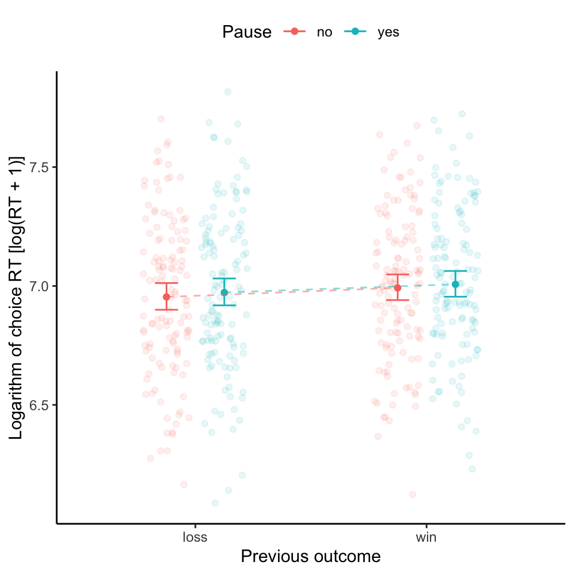
Figure 13: Estimated choice RT as a function of previous outcome and pause condition, with individual data points.
Source Code
---title: "Experiment 3 - RT analysis (exploratory data set)"author: - name: "Zhang Chen" orcid: 0000-0002-3500-9182date: "`r format(Sys.time(), '%d %B, %Y')`"format: html: code-fold: true code-tools: trueeditor: visualexecute: warning: false error: falsetoc: truetoc-depth: 3---In this set of analyses, I focus on the reaction times of starting game 2 (i.e., start RTs) and those of making a choice in game 2 (i.e., choice RTs). Here I use the exploratory data set with 127 participants.## Load libraries and data```{r}# load librarieslibrary(MASS)library(Rmisc)library(afex)library(tidyverse)library(patchwork)library(extraDistr)library(loo)library(bridgesampling)library(brms)library(cmdstanr)library(bayesplot)library(bayestestR)library(tidybayes)library(sjPlot)# parallelize the chains using all the coresoptions(mc.cores = parallel::detectCores())# set the theme for all ggplot2 figurestheme_set(theme_classic() +theme(legend.position ="top",legend.direction ="horizontal"))# create a folder for saving brms fitsif(!dir.exists("brms-fits")){dir.create("brms-fits")}# load the cleaned experimental datadf_exp <-read_csv("../../../data/processed/df_exp_exp3_complete.csv")```## Start RTs### Data preparationNext I examine how quickly participants started game 2 after a win vs. after a loss, and also as a function of whether there was a delay or not.```{r}# trial number before any exclusionn_before <-nrow(df_exp)# exclude trials in which the start RTs were above 5000 millisecondsdf_after <- df_exp %>%filter(game2_startRT <=5000)# trial number after exclusion, and the proportion of excluded trialsn_after <-nrow(df_after)exclude_prop <-round((n_before - n_after)/n_before *100, 2)# check the number of remaining trials in each cell for each participanttrials_count <- df_after %>%count(subject_ID, game1_outcome, delay)```Trials in which the start RT of game 2 was above 5000 milliseconds were excluded (`r exclude_prop`% of all trials). For the remaining participants, each cell in the 2 (game 1 outcome, win vs. loss) by 2 (delay, yes vs. no) contains at least `r min(trials_count$n)` trials, which seems reasonable.### Mean start RTsFor each participant, I then compute the mean start RT (for game 2) after a win or a loss in game 1, depending on whether there was a delay or not. @fig-mean-startRT shows the mean start RTs as a function of the previous outcome and the delay condition.```{r}#| label: fig-mean-startRT#| fig-cap: Mean start RTs for game 2 as a function of game 1 outcome and delay. Error bars stand for 95% within-subject confidence intervals.#| fig-width: 6#| fig-height: 5# compute the mean start RT in each cell for each participantdf_startRTs <- df_after %>%group_by(subject_ID, game1_outcome, delay) %>%summarize(startRT =mean(game2_startRT))# plot the resultsmean_startRT_plot <- df_startRTs %>%summarySEwithin(measurevar ="startRT",withinvars =c("game1_outcome", "delay"),idvar ="subject_ID") %>%ggplot(aes(game1_outcome, startRT, color = delay)) +geom_point(position =position_dodge(width =0.5)) +geom_line(aes(group = delay), linetype ="dashed", alpha =0.5,position =position_dodge(width =0.5)) +geom_errorbar(aes(ymin = startRT - ci, ymax = startRT +ci),position =position_dodge(width =0.5), width =0.3) +labs(x ="Previous outcome", y ="Mean Start RT (milliseconds)",color ="Pause")mean_startRT_plot```### Median start RTsHere I repeat the analysis above, this time using the median RT in each cell instead of the mean.```{r}#| label: fig-median-startRT#| fig-cap: Median start RTs for game 2 as a function of game 1 outcome and delay. Error bars stand for 95% within-subject confidence intervals.#| fig-width: 6#| fig-height: 5# compute the mean start RT in each cell for each participantdf_startRTs <- df_after %>%group_by(subject_ID, game1_outcome, delay) %>%summarize(startRT =median(game2_startRT))# plot the resultsmedian_startRT_plot <- df_startRTs %>%summarySEwithin(measurevar ="startRT",withinvars =c("game1_outcome", "delay"),idvar ="subject_ID") %>%ggplot(aes(game1_outcome, startRT, color = delay)) +geom_point(position =position_dodge(width =0.5)) +geom_line(aes(group = delay), linetype ="dashed", alpha =0.5,position =position_dodge(width =0.5)) +geom_errorbar(aes(ymin = startRT - ci, ymax = startRT +ci),position =position_dodge(width =0.5), width =0.3) +labs(x ="Previous outcome", y ="Median Start RT (milliseconds)",color ="Pause")median_startRT_plot```### Multilevel models#### Fit modelFit the data with a hierarchical regression.```{r}# since startRT is positively skewed,# take the natural logarithm of the startRT as the dependent variable# we add 1 to all observations because in previous experiments,# start RTs sometimes can be 0, posing a problem for log-transformation.df_startRT <- df_after %>%mutate(log_startRT =log(game2_startRT +1))# fit a brms model, with student's t as the likelihood functionfit_startRT <-brm( log_startRT|trunc(ub =log(5001)) ~ game1_outcome_num * delay_num + (game1_outcome_num * delay_num|subject_ID),family =student(),prior =c(prior(normal(6.5, 1.5), class = Intercept),prior(normal(0, 1), class = b),prior(normal(0, 1), class = sd),prior(normal(0, 1), class = sigma),prior(gamma(2, 0.1), class = nu),prior(lkj(2), class = cor) ),data = df_startRT,cores =4,iter =7000,warmup =2000,seed =1234,refresh =10,file ="brms-fits/fit_startRT",backend ="cmdstanr" )```#### Results```{r}#| label: fig-ppc-startRT#| fig-cap: Posterior predictive check for start RT.#| fig-width: 5#| fig-height: 5# check model diagnostics# plot(fit_startRT)# the trace plots look okay# loo(fit_startRT)# All Pareto k estimates are good (k < 0.5).# posterior predictive checkyrep <-posterior_predict(fit_startRT)# turn the start RT back to the original scaleyrep <-exp(yrep) -1ppc_dens_overlay(df_startRT$game2_startRT, yrep[1:50, ])remove(yrep)``````{r, results='asis'}# have a look at the summary of posterior distributionstab_model(fit_startRT, digits =2)```#### Plots```{r}# load some custom functions to plot RTs# all functions require the posterior draws from brms models as inputsource("function/RT_plot_functions.R")# select parameters of interestvar_selected <-get_variables(fit_startRT)[1:4]draws <- fit_startRT %>%as_draws_df(variable = var_selected) # compute extra parameters for all simple and main effectsdraws <-compute_RTs(draws)# plot RTs in each of the 2 by 2 cellsstartRT_plot <-plot_RTs(draws)# some minor modificationstartRT_plot <- startRT_plot +labs(y ="Start RT (milliseconds)")# plot all the effects startRT_effs_plot <-plot_RT_effs(draws)# some minor modificationstartRT_effs_plot <- startRT_effs_plot +labs(x ="Estimated difference in start RT (milliseconds)")# save the figuresggsave("../5-plots/startRT_Exp3_prereg.png", startRT_plot, width =2.5, height =5)ggsave("../5-plots/startRT_effs_Exp3_prereg.png", startRT_effs_plot, width =8, height =5)``````{r}#| label: fig-predicted-startRT#| fig-cap: Estimated start RT as a function of previous outcome and pause condition#| fig-width: 5#| fig-height: 5startRT_plot``````{r}#| label: fig-startRT-effs#| fig-cap: Esimates of main and simple effects on start RT.#| fig-width: 8#| fig-height: 5startRT_effs_plot``````{r}#| label: fig-predicted-startRT2#| fig-cap: Estimated start RT as a function of previous outcome and pause condition, with individual data points.#| fig-width: 5#| fig-height: 5# Another plot, that includes the individual data points# this plot may be a bit difficult to read the inclusion of individual data points# makes the range of RT relatively large. Keep it here for now.# compute the mean of log start RT in each cell for each participantstartRT_obs <- df_startRT %>%group_by(subject_ID, game1_outcome, delay) %>%summarize(obs =mean(log_startRT)) # get the predicted log start RT from the modelint_conds <-list(game1_outcome_num =c(-0.5, 0.5),delay_num =c(-0.5, 0.5))startRT_pred <-conditional_effects( fit_startRT, "game1_outcome_num:delay_num",int_conditions = int_conds)# turn the predictions into a tibblestartRT_pred <-as_tibble( startRT_pred$`game1_outcome_num:delay_num` ) %>%mutate(delay =ifelse(delay_num ==0.5, "yes", "no"),game1_outcome =ifelse(game1_outcome_num ==0.5, "loss", "win") )startRT_pred_original <- startRT_pred %>%mutate(estimate__ =exp(estimate__) -1,lower__ =exp(lower__) -1,upper__ =exp(upper__) -1 )# make a plotstartRT_ind_plot <- startRT_obs %>%ggplot(aes(game1_outcome, obs, color = delay)) +geom_point(position =position_jitterdodge(jitter.width =0.2,jitter.height =0,dodge.width =0.5), alpha =0.1) +geom_point(data = startRT_pred, aes(game1_outcome, estimate__,color = delay),position =position_dodge(width =0.5)) +geom_errorbar(data = startRT_pred,aes(x = game1_outcome,y = estimate__,ymin = lower__,ymax = upper__),position =position_dodge(width =0.5),width =0.2) +geom_line(data = startRT_pred,aes(x = game1_outcome,y = estimate__,group = delay),position =position_dodge(width =0.5),linetype ="dashed",alpha =0.5) +labs(x ="Previous outcome",y ="Logarithm of startRT [log(RT + 1)]",color ="Pause")startRT_ind_plot```## Choice RTs### Data preparationNext I examine whether the increased sensitivity towards the EV ratio after a delay may be explained by participants making decisions more slowly in the delay condition.```{r}#| label: fig-game2-choiceRT#| fig-cap: Histogram of all game 2 choice reaction times.#| fig-width: 5#| fig-height: 4# plot a distribution of all game 2 choice RTsggplot(df_exp, aes(game2_respRT)) +geom_histogram(bins =40) +geom_vline(xintercept =5000, linetype ="dashed") +labs(x ="Game 2 choice reaction time (milliseconds)")```To reduce the influence of a few long reaction times, I exclude the trials where the choice RT was above 5000 milliseconds.```{r}#| label: fig-game2-choiceRT-per-cell#| fig-cap: Choice RT in game 2 as a function of game 1 outcome and delay. Error bars stand for 95% within-subject confidence intervals.#| fig-width: 6#| fig-height: 5# number of trials before exclusionn_before <-nrow(df_exp)# exclude trials with choice RTs above 5000 msdf_choiceRT <- df_exp %>%filter(game2_respRT <=5000)# number of trials after exclusionn_after <-nrow(df_choiceRT)# proportion of excluded trialsprop_exclude <-round((n_before - n_after)/n_before *100, 2)```### Mean choice RTs```{r}#| label: fig-mean-choiceRT#| fig-cap: Mean choice RTs for game 2 as a function of game 1 outcome and delay. Error bars stand for 95% within-subject confidence intervals.#| fig-width: 6#| fig-height: 5df_choiceRT_summary <- df_choiceRT %>%group_by(subject_ID, game1_outcome, delay) %>%summarize(choiceRT =mean(game2_respRT))# plot the choice RTsdf_choiceRT_summary %>%summarySEwithin(measurevar ="choiceRT",withinvars =c("game1_outcome", "delay"),idvar ="subject_ID") %>%ggplot(aes(game1_outcome, choiceRT, color = delay)) +geom_point(position =position_dodge(width =0.5)) +geom_line(aes(group = delay), linetype ="dashed", alpha =0.5,position =position_dodge(width =0.5)) +geom_errorbar(aes(ymin = choiceRT - ci, ymax = choiceRT +ci),position =position_dodge(width =0.5), width =0.3) +labs(x ="Previous outcome", y ="Mean choice RTs (milliseconds)",color ="Pause")```### Median choice RTs```{r}#| label: fig-median-choiceRT#| fig-cap: Median choice RTs for game 2 as a function of game 1 outcome and delay. Error bars stand for 95% within-subject confidence intervals.#| fig-width: 6#| fig-height: 5df_choiceRT_summary <- df_choiceRT %>%group_by(subject_ID, game1_outcome, delay) %>%summarize(choiceRT =median(game2_respRT))# plot the choice RTsdf_choiceRT_summary %>%summarySEwithin(measurevar ="choiceRT",withinvars =c("game1_outcome", "delay"),idvar ="subject_ID") %>%ggplot(aes(game1_outcome, choiceRT, color = delay)) +geom_point(position =position_dodge(width =0.5)) +geom_line(aes(group = delay), linetype ="dashed", alpha =0.5,position =position_dodge(width =0.5)) +geom_errorbar(aes(ymin = choiceRT - ci, ymax = choiceRT +ci),position =position_dodge(width =0.5), width =0.3) +labs(x ="Previous outcome", y ="Median choice RTs (milliseconds)",color ="Pause")```### Multilevel models#### Fit modelI use log-transformed choice RT as the dependent variable (truncated with a upper bound of log(5001), as above). Both game 1 outcome, whether there was a pause or not and their interaction are included as predictors.```{r}# log-transform the choice RTdf_choiceRT <- df_choiceRT %>%mutate(log_choiceRT =log(game2_respRT +1))# fit a brms modelfit_choiceRT <-brm( log_choiceRT|trunc(ub =log(5001)) ~ game1_outcome_num * delay_num + (game1_outcome_num * delay_num|subject_ID),family =student(),prior =c(prior(normal(6.5, 1), class = Intercept),prior(normal(0, 1), class = b),prior(normal(0, 1), class = sd),prior(normal(0, 1), class = sigma),prior(gamma(2, 0.1), class = nu),prior(lkj(2), class = cor) ),data = df_choiceRT,cores =4,iter =7000,warmup =2000,seed =1234,refresh =10,file ="brms-fits/fit_choiceRT",backend ="cmdstanr",refresh =10 )```#### Results```{r}#| label: fig-ppc-choiceRT#| fig-cap: Posterior predictive check for choice RT.#| fig-width: 5#| fig-height: 5# check model diagnostics# plot(fit_choiceRT)# the traceplots look okay# loo(fit_choiceRT)# All Pareto k estimates are good (k < 0.5).# posterior predictive checkyrep <-posterior_predict(fit_choiceRT)# turn the choice RT back to the original scaleyrep <-exp(yrep) -1ppc_dens_overlay(df_choiceRT$game2_respRT, yrep[1:50, ])remove(yrep)``````{r,results='asis'}tab_model(fit_choiceRT, digits =4)```#### Plots```{r}# load some custom functions to plot RTs# all functions require the posterior draws from brms models as inputsource("function/RT_plot_functions.R")# select parameters of interestvar_selected <-get_variables(fit_startRT)[1:4]draws <- fit_choiceRT %>%as_draws_df(variable = var_selected) # compute extra parameters for all simple and main effectsdraws <-compute_RTs(draws)# plot RTs in each of the 2 by 2 cellschoiceRT_plot <-plot_RTs(draws)# some minor modificationchoiceRT_plot <- choiceRT_plot +labs(y ="Choice RT (milliseconds)")# plot all the effects choiceRT_effs_plot <-plot_RT_effs(draws)# some minor modificationchoiceRT_effs_plot <- choiceRT_effs_plot +labs(x ="Estimated difference in choice RT (milliseconds)")# save the figuresggsave("../5-plots/choiceRT_Exp3_prereg.png", choiceRT_plot, width =2.5, height =5)ggsave("../5-plots/choiceRT_effs_Exp3_prereg.png", choiceRT_effs_plot, width =8, height =5)``````{r}#| label: fig-predicted-choiceRT#| fig-cap: Estimated choice RT as a function of previous outcome and pause condition#| fig-width: 5#| fig-height: 5choiceRT_plot``````{r}#| label: fig-choiceRT-effs#| fig-cap: Esimates of main and simple effects on choice RT.#| fig-width: 8#| fig-height: 5choiceRT_effs_plot``````{r}#| label: fig-predicted-choiceRT2#| fig-cap: Estimated choice RT as a function of previous outcome and pause condition, with individual data points.#| fig-width: 5#| fig-height: 5# compute the mean of log choice RT in each cell for each participantchoiceRT_obs <- df_choiceRT %>%group_by(subject_ID, game1_outcome, delay) %>%summarize(obs =mean(log_choiceRT)) # get the predicted log choice RT from the modelint_conds <-list(game1_outcome_num =c(-0.5, 0.5),delay_num =c(-0.5, 0.5))choiceRT_pred <-conditional_effects( fit_choiceRT, "game1_outcome_num:delay_num",int_conditions = int_conds)# turn the predictions into a tibblechoiceRT_pred <-as_tibble( choiceRT_pred$`game1_outcome_num:delay_num` ) %>%mutate(delay =ifelse(delay_num ==0.5, "yes", "no"),game1_outcome =ifelse(game1_outcome_num ==0.5, "loss", "win") )choiceRT_pred_original <- choiceRT_pred %>%mutate(estimate__ =exp(estimate__) -1,lower__ =exp(lower__) -1,upper__ =exp(upper__) -1 )# make a plotchoiceRT_ind_plot <- choiceRT_obs %>%ggplot(aes(game1_outcome, obs, color = delay)) +geom_point(position =position_jitterdodge(jitter.width =0.2,jitter.height =0,dodge.width =0.5), alpha =0.1) +geom_point(data = choiceRT_pred, aes(game1_outcome, estimate__,color = delay),position =position_dodge(width =0.5)) +geom_errorbar(data = choiceRT_pred,aes(x = game1_outcome,y = estimate__,ymin = lower__,ymax = upper__),position =position_dodge(width =0.5),width =0.2) +geom_line(data = choiceRT_pred,aes(x = game1_outcome,y = estimate__,group = delay),position =position_dodge(width =0.5),linetype ="dashed",alpha =0.5) +labs(x ="Previous outcome",y ="Logarithm of choice RT [log(RT + 1)]",color ="Pause")choiceRT_ind_plot```
![]()